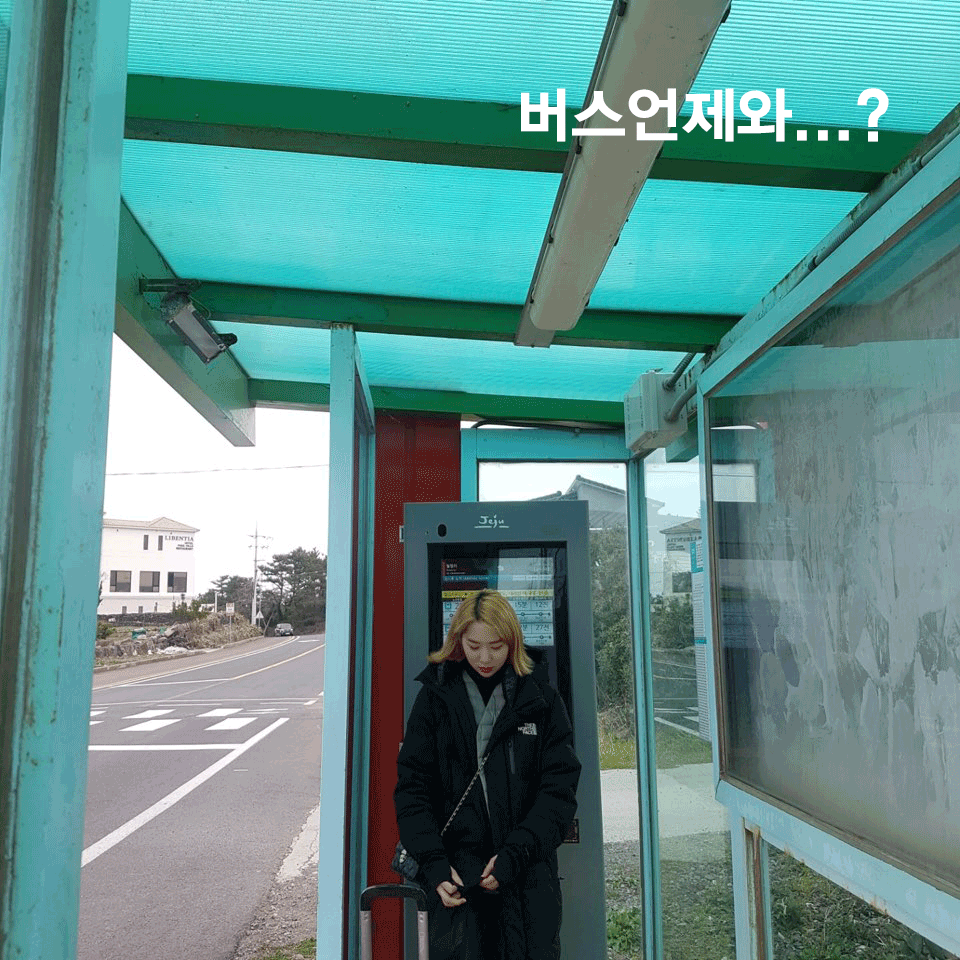
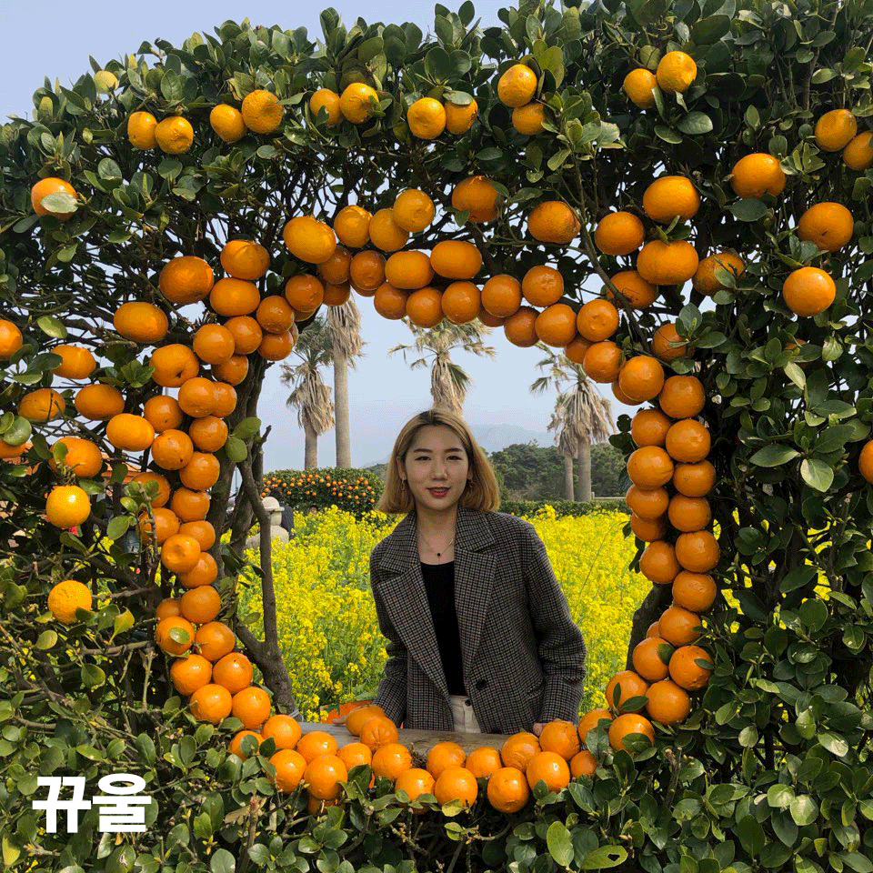

미술학원을 같이 다니고 학교를 가까이 오게되면서 친해지게된 혜진언니와 즉흥으로 제주도를 갔다
갑자기 떠난 여행이기에 1박2일이라는 짧은 시간이였지만 많이 걷고 잊을 수 없는 풍경들을 눈에 담았기 때문에 아쉬움은 없었다
마지막날 바라본 제주 앞바다는 정말 담아가고 싶을 정도로 예뻤다
유채꽃이 노랑노랑하게 만발할 무렵 엄마랑 동생이랑 한번 더 제주도를 오게됬다
일몰도 보고 한라산도 보고싶었지만 미세먼지가 너무 많아서 한개도 안보였다
아쉬웠지만 우도에서 전기차 운전할 때 엄청 재밌었다
맛있는것도 많이 먹고 엄마랑 오랜만에 여행이라 재밌었다
